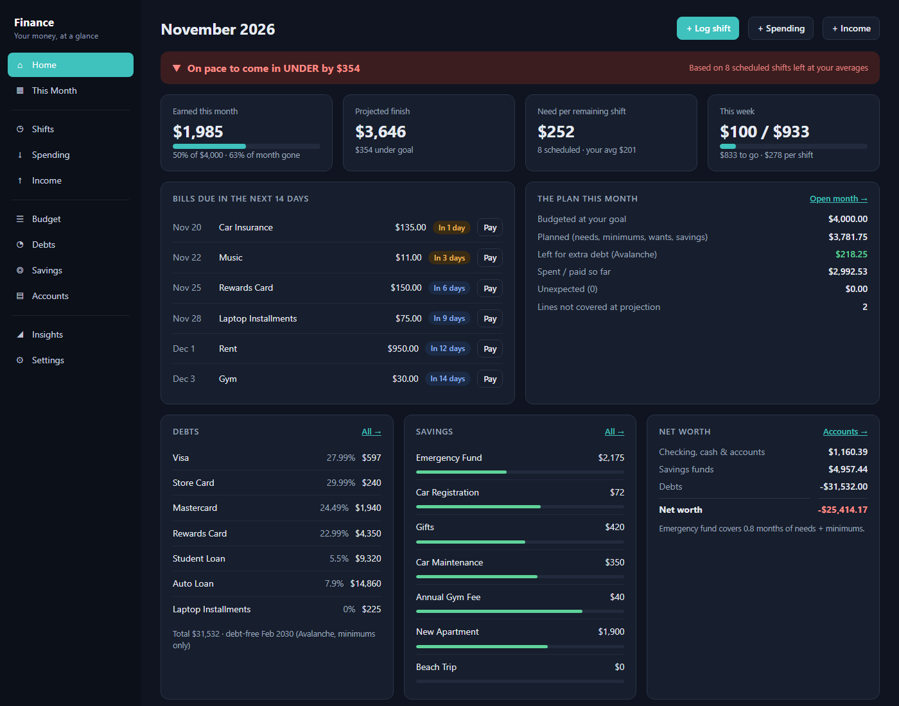
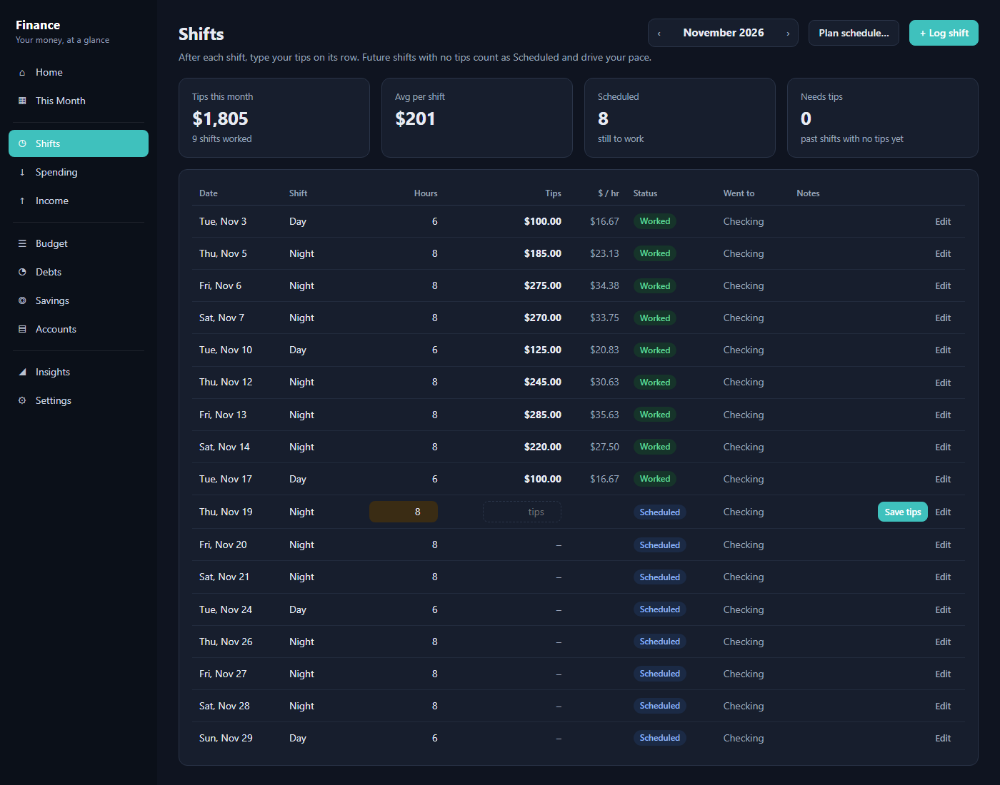
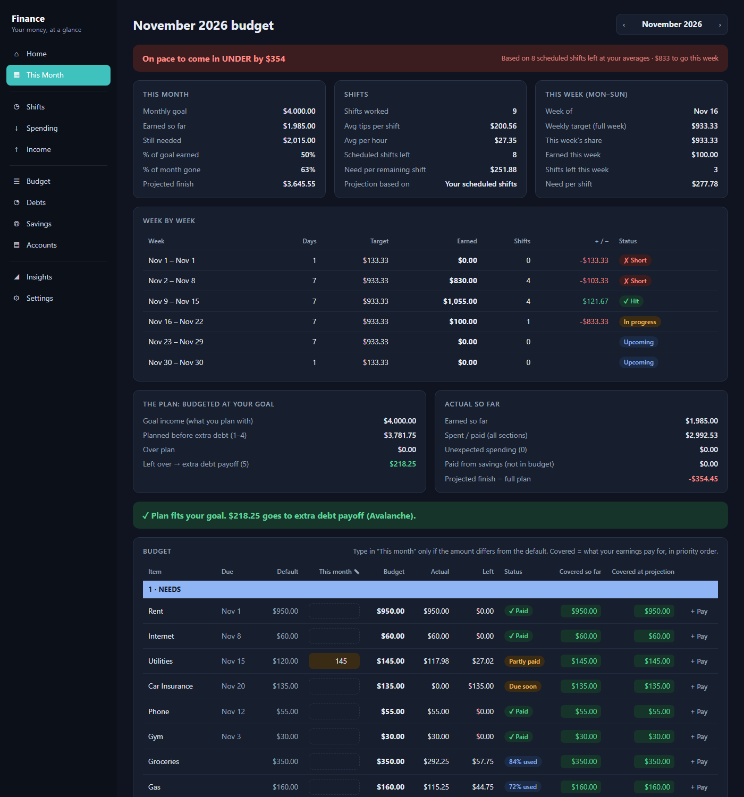
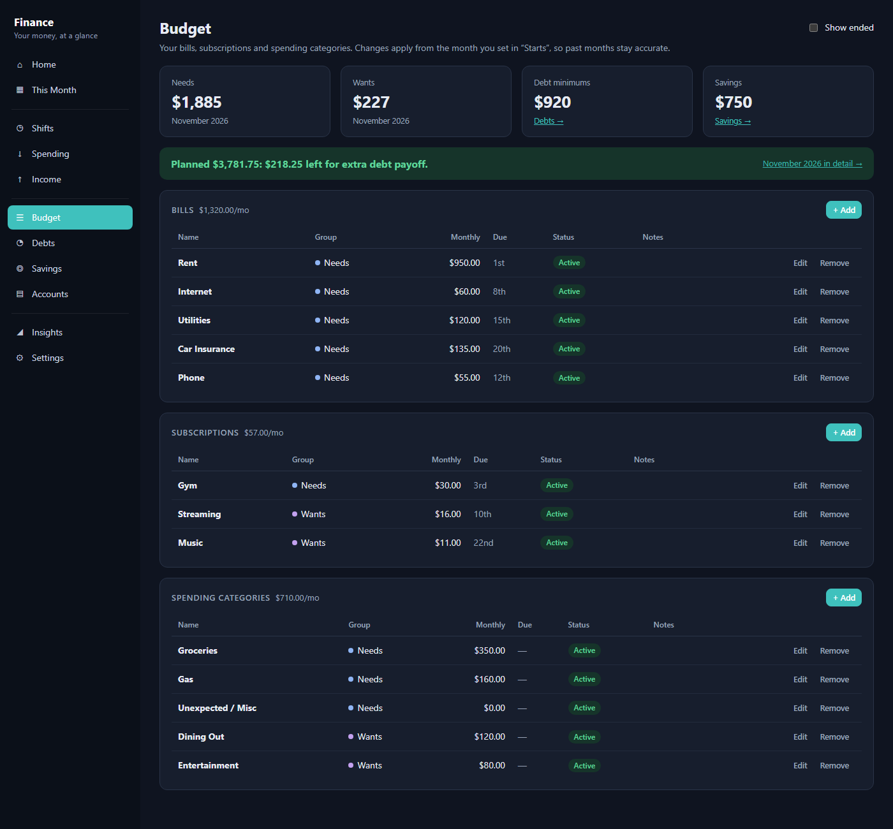
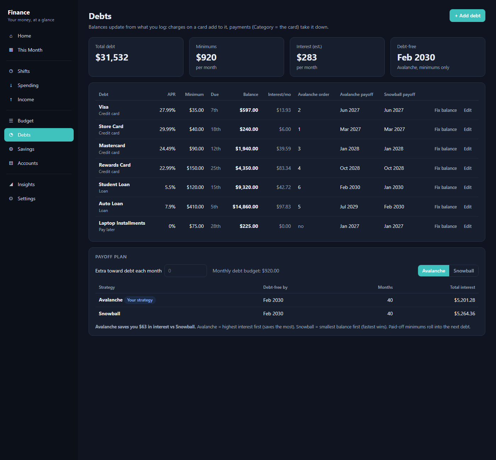
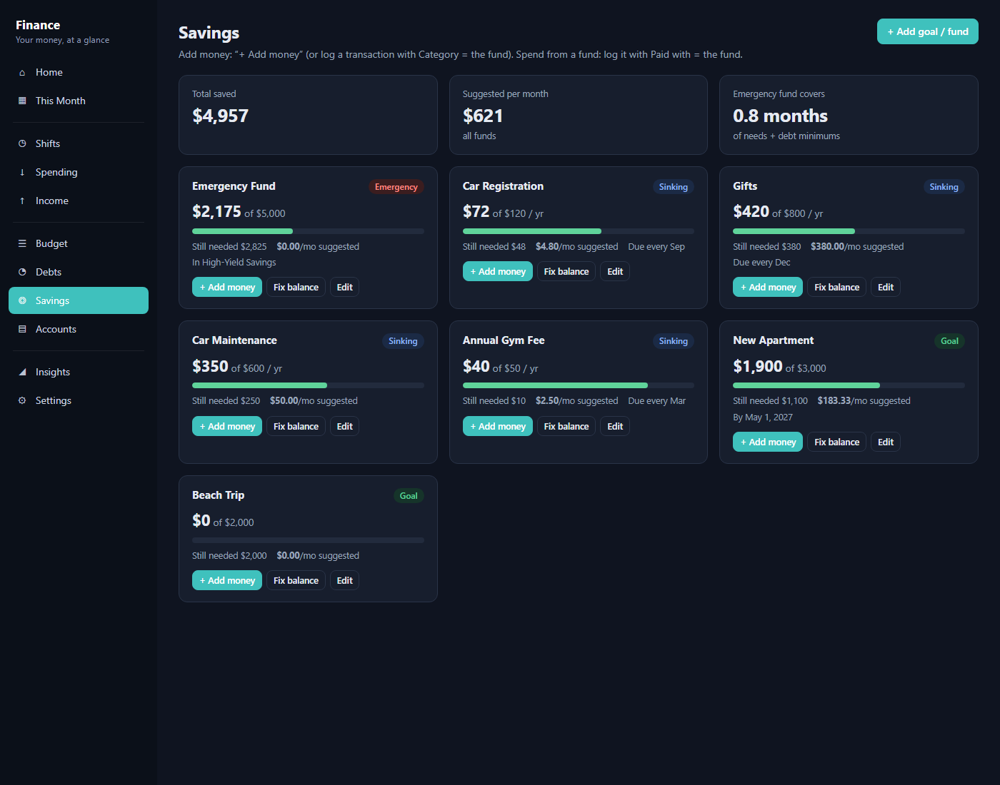
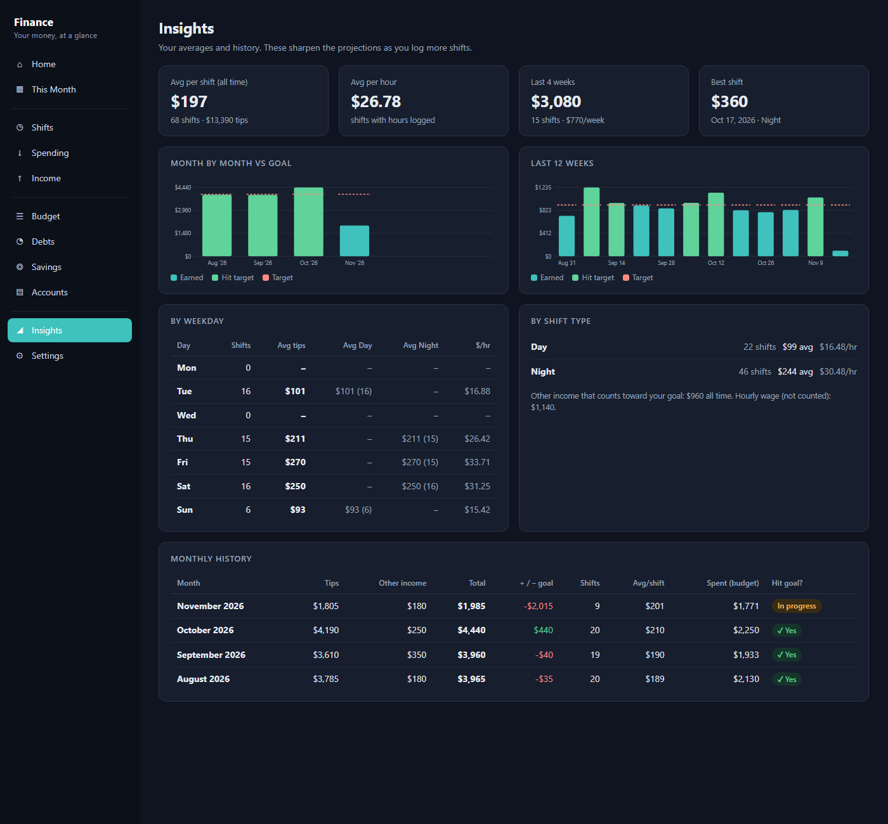

002 · Side Project
Financial Health Tool
Overview
No budgeting app I tried really worked with inconsistent bartending income, so I built my own tool. It helps you know early whether to save extra or cut back.
How it works
- Log tips after each shift
- Set a monthly budget based on what you expect to make
- Tracks actual earnings and spending
- Projects where you'll land by the end of the month
- Shows balances, upcoming bills, and debts in one place
Pictures & video
Disclaimer: all information shown in these screenshots is demo data. None of it reflects any real financial information.






